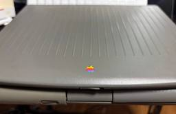
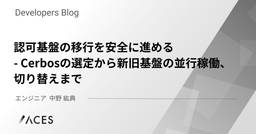
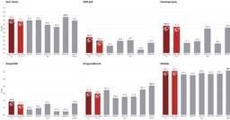

直近1週間の人気フィード
はてなブックマーク数を元に新着優先で並べ替え
小島秀夫新作『PHYSINT』協業をソニーが中止、XBOXで開発継続へ 『キャンセルするという通達が突然届きました』 248
248 テクノエッジ TechnoEdge
テクノエッジ TechnoEdge
『メタルギア』シリーズや『デス・ストランディング』で知られるゲームデザイナー小島監督の新作『PHYSINT』が、共同発表したソニーからパートナーシップを断たれ、新たにマイクロソフトXBOXとの協業で開発を継続することが分かりました。
3日前
写真から実物と区別つかないレベルの3D人体モデルを作り、リグ入れてリアルタイム対話させるまで。ChatGPTとClaudeのコラボで開発した（CloseBox） 42 テクノエッジ TechnoEdge
写真からフォトリアリスティックな人体モデルを生成する話は以前から何度かしておりますが、ひさしぶりに触ってみたところ、ほぼ写真と区別がつかないレベルまで到達したのではないかと実感するに至りました。
2日前

クロスプラットフォーム開発が解決するコスト、解決しないコスト 25 Zennの「AI」のフィード
Zennの「AI」のフィード
2026年9月、Shopify Engineeringから「Native is now the future of mobile at Shopify」という記事が公開されました。https://shopify.engineering/back-to-nativeShopifyは2020年にモバイルアプリ開発をReact Nativeへ寄せる方針を打ち出し、React Nativeコミュニティにも大きな投資を続けてきた会社です。そのShopifyがSwiftとKotlinを使ったネイティブ開発へ戻るというのですから、なかなかインパクトのある話です。このニュースを受けて「やはりRea...
11時間前

しばらく先行レビューしていたAppleのフォルダブルDuoについて語らせてくれ（CloseBox） 53 テクノエッジ TechnoEdge
Appleの新しいCEOが発表する新製品を出したそうですね。Duoとかいうフォルダブル。二つ折りの携帯端末。筆者も持ってます。
3日前

Windows用「Gemini」アプリ提供開始 画面上に重ねて作業を中断せず利用可能に 27
ITmedia AI＋ 最新記事一覧
Googleは、Windows向けデスクトップアプリ「Gemini app for Windows」を公開した。Windows 10および11に対応し、UIは日本語をサポートする。［Alt］＋［Space］で作業画面上に重ねて呼び出せるほか、自律型AIエージェント「Gemini Spark」や画像・動画生成もPC上で利用できる（一部は有料プランが必要）。Mac版は4月にリリース済み。
2日前
AIを「社内一の怠け者だけど優秀なベテランエンジニア」に変えるツール「ポニーテール」が生成コードを最大94%削減する（生成AIクローズアップ） 236 テクノエッジ TechnoEdge
今回は、AIエージェントを社内で一番怠惰だけど優秀なベテランエンジニアのように変身させる拡張ツール「ponytail」（ポニーテール）を取り上げます。50行のコードを見せると、何も言わずにたった1行に置き換えてしまう手抜き上手なエンジニアというイメージです。
6日前

夏休みの宿題をオンスケで終えられなかった私が、AWS全冠を約2か月で完走できた理由 56
 フューチャー技術ブログ
フューチャー技術ブログ
2026年7月から8月の約2か月で、AWS認定の残り11資格に一発合格し、全冠を達成しました。細かい学習計画は立てず、合格したその場で次の試験を予約する「予定先入れ・締切駆動」で進めた記録です。
4日前

ETL 基盤を Embulk から dlt + dbt に乗り換えた 2 つの理由 55 エムスリーテックブログ
エムスリーテックブログ
この記事はコンシューマーチームブログリレー 4日目の記事です。 Embulk 0.9.25 で動かしていた担当プロジェクトの ETL を、dlt + dbt と Step Functions に全面移行しました。証明書エラーと BigQuery のレガシー API 利用で観念した話です。 こんにちは。エムスリーのコンシューマーチームエンジニアの園田です。 コンシューマーチームで大幅なメンテナンスなく元気に動いていたEmbulkですが、今年の夏に全部やめました。 なぜやめたのか、なぜ dlt + dbt なのか、やってみてどこでハマったのか、という順で書いています。 新しい技術の話はほとんどなく…
5日前

QuineMakerを作った話と技術的な解説 22 エムスリーテックブログ
はじめに エムスリー株式会社、業務執行役員VPoEの河合(@vaaaaanquish)です。 本記事は、私もGMとして在籍する「AskDoctors開発チーム」のブログリレー 5日目の記事です。 本記事では、私が個人開発した「QuineMaker」というサービスの技術面の紹介をします。 はじめに QuineMakerについて Quineについて Quineの作り方 画像からのQuine生成 画像に対して適切なコードを見つける 色付きQuineの生成 動画からのQuine生成 動画からのQuineの難しさ おわりに We are hiring !!
4日前

Anthropic、AI悪用レポートを公開 中国AI企業の「蒸留」、各国政府の監視・世論操作、生物兵器につながり得る研究を列挙 11ITmedia AI＋ 最新記事一覧
Anthropicは、自社AI「Claude」の悪用事例をまとめた脅威レポートを公開した。生物兵器の設計や国家機関による世論操作や反体制派監視、通常兵器開発への利用を検知、遮断したと発表。中国AI企業による組織的なモデル抽出（蒸留）の実態も報告し、危険な転用への警戒を強めている。
2日前

認可基盤の移行を安全に進める- Cerbosの選定から新旧基盤の並行稼働、切り替えまで 20 ACES エンジニアブログ
ACES エンジニアブログ
はじめに 認可基盤を移行することになった背景 認可エンジンの選定と、会議一覧の認可フィルタ設計 Cerbosを選んだ理由 会議一覧をどう認可フィルタするか PoCによる設計の具体化 データの移行、新旧並行稼働、新認可への切り替え デュアルライト（新旧二重書き込み） データ移行 パラレルラン（新旧認可の並行検証） 新認可への切り替えと、ロールバックを前提としない判断 うまくいった点と反省点 うまくいった点 反省点 おわりに はじめに こんにちは、株式会社ACES でソフトウェアエンジニアをしている中野です！ 最近シャクティマットを購入し、寝る前に悶えながら楽しんでます。 私が所属するチームでは、…
4日前

GPT-6 Astra × Blender でTripoモデルのUV展開を試す 3 npaka
npaka
GPT-6 Astra × BlenderでTripoモデルのUV展開を試したのでまとめました。続きをみる
16時間前

Sakana AI、一部「GPT-6 Astra」「Fable 5.1」超えうたうFugu最新版 連携先に「両モデルは含まず」 4ITmedia AI＋ 最新記事一覧
Sakana AIは、複数のAIモデルを組み合わせてタスクをこなすAI「Sakana Fugu」の最新版「Fugu Ultra v2」「Fugu Max」を発表した。
2日前
Meta、パーソナルAIエージェント「Muse」発表。ユーザーの日常タスクを自律的に支援、セキュリティやプライバシーも考慮した設計うたう 27 テクノエッジ TechnoEdge
Metaは、米国のユーザー向けに新しいパーソナルAIエージェント「Muse」を発しました。Metaが独自に開発したAIモデル「Muse Spark」を採用し、ウェブブラウジングやファイル操作、フォームへの入力、購入手続きといった幅広いタスクをバックグラウンドで自律的に実行します。
4日前

「AIに任せる」はどこまで？ 最終判断まで容認する20代、慎重になる50代 3ITmedia AI＋ 最新記事一覧
生成AIに仕事を任せるとして、どこまで許せるのか。チェンジホールディングスの調査から、人間がAIに「任せたい業務」の実態が浮かび上がった。世代別では、20代は最終承認までAIに任せたいと考えているという。
2日前
トランプスマホ「T1」が従来比1.5倍にサイレント値上げ。iPhone 17eより高額に 4 テクノエッジ TechnoEdge
トランプ米大統領が所有するトランプ・オーガニゼーション傘下のMVNO事業者トランプ・モバイルは、同社が販売する金色のスマートフォン「T1」の価格を、499ドル（約7万7000円）から749ドル（約12万3000円）に引き上げました。従来比約1.5倍の大幅値上げとなります。
2日前
GPT-6 Astra で Blender Geometry Nodes を試す 29 npaka
「GPT-6 Astra」で「Blender Geometry Nodes」を試してみました。続きをみる
5日前

ルービックキューブを一撃で解く専用LLMを作った 27
Tech Blog - Turingのフィード
CUBE ZERO — ルービックキューブを一撃で解く専用LLMをゼロから育てた 1. なぜ作った？事前知識ゼロから育ち、ルービックキューブを一撃で解くLLMがあったら、かっこいいですよね。ということで、CEOの夏休みの自由研究として作りました！完成したモデルは、現在のキューブと過去の手順を受け取り、次の1手を自己回帰的に生成します。学習後は、初めて見る局面の99.83%を1回の生成で解けました。 2. ルービックキューブはどれくらい難しいのかルービックキューブには、約 4.3 × 10^19 通りの状態があります。ただし、すべての状態が同じ難しさではありません。完...
7日前
ChatGPT、最上位プランの新規受付を一時停止 「Astra」需要対応のため 既存加入者には影響なし 3ITmedia AI＋ 最新記事一覧
OpenAIのティボー・ソティオ氏（通称Tibo）は新モデル「GPT-6 Astra」の需要拡大に対応するため、最上位プランの新規受付を停止すると発表した。
2日前

OpenAI、金融機関向け「ChatGPT for Financial Services」 金融データ搭載し「GPT-6 Astra」で分析 3ITmedia AI＋ 最新記事一覧
OpenAIは、金融機関向けAI「ChatGPT for Financial Services」を発表した。最新モデル「GPT-6 Astra」を基盤に、主要な金融データセットを標準で内蔵。財務分析や顧客向け資料作成を支援し、既存の契約データとの連携やMicrosoft Officeテンプレートの社内配布にも対応する。
2日前

業務の30％をAIエージェントがこなすIT運用部門、なぜ「パワポ文書」を禁止したのか？ 3ITmedia AI＋ 最新記事一覧
業務の約30％をAIエージェントに任せているNTTドコモソリューションズのIT運用部門。同部門が、AI活用に取り組む中で、日報や週報での「パワポ文書」を禁止したのはなぜか。一見、デジタル化に逆行するようにも見える施策の狙いを聞いた。
2日前
Kaggleコンペ紹介：AI Agent Security - Multi-Step Tool Attacks 8 松尾研究所テックブログのフィード
はじめにこんにちは、松尾研究所 データサイエンティストの力岡です。今回は、Kaggleで開催された「AI Agent Security - Multi-Step Tool Attacks」コンペに参加し、4,187チーム中4位（金メダル） を獲得することができました。本記事では、コンペの概要や攻略の考え方、私たちの取り組み、上位解法について紹介します。本コンペは、「AIエージェントのセキュリティ」を題材にしたレッドチーミングコンペです。PublicリーダーボードとPrivateリーダーボードで順位がほとんど入れ替わる激しいシェイクアップが起き、2,802チームがPrivateで...
5日前
アップル新イヤホン AirPods 5 発表。「業界最高クラス」の解放型ANC搭載、税込2万3800円から 3 テクノエッジ TechnoEdge
アップルは、9月10日午前2時から行われた新型iPhone発表イベントで「業界最高のアクティブノイズキャンセリング（ANC）」を搭載するとうたう新型完全ワイヤレスイヤホン AirPods 5 を発表しました。
3日前
GPT-6 Astra x Blender で3Dアニメーション作成を試す 4 npaka
GPT-6 Astra x Blender で3Dアニメーション作成を試したのでまとめました。推論レベル中の1発出しになります。続きをみる
7日前